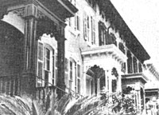

Savannah is a historic town that offers the kind of ambiance that's just not found in most of our swollen cities . . . and it's well worth making a slight detour if you happen to be taking a winter trip to Florida. The Georgia town also offers a pleasant alternative to the usual look-alike motels. Currently, the city boasts nine guest houses, most of which occupy the ground floors of three- and four-story townhouse restorations in the heart of Savannah's nationally acclaimed historic landmark district. (These are usually private-entrance apartments, rather than simply bed-andbreakfast rooms.)
Although such restorations have been going on since the mid-1960's, the opening up of the old houses to guests is a fairly recent occurrence. The Colonial architecture is often characterized by a high front-entrance stairway to an elevated first-floor level (for the purpose of keeping street dust, in the days before paved roads, out of one's living room). After the living-quarters were restored, some homeowners turned the vacant ground-floor spaces (and even former carriage houses) into mini-hotels.
The large, charming quarters (many of which can comfortably sleep four adults) vary in price from $35 to $90 a day. For complete listings, contact the Savannah Convention and Visitors Bureau, Dept. TMEN, 301 West Broad Street, Savannah, Georgia 31401. (Ask for a Visitor's Guide Map, which will enable you to take a walking tour of the quaint old town.)
If you're considering heading down to join the Mardi Gras in New Orleans (the celebration falls on March 3 this year), here are some good budget-watching tips from MOTHER-reader Daniel Wesolowski:
"You can avoid the $25 taxi fare from the airport," Daniel writes, "by taking the Airport/Tulane Avenue bus to the city (it leaves every half hour from in front of the main terminal) for 80 cents. Then, to sidestep exorbitant hotel bills, stay in the 'up-town' area. (It's quiet, safe, and only a 15-minute, 40 cents trolley car hop from the famous French Quarter.) There, at either Loyola or Tulane University, you might even meet a neighborly student who'll lend you some floor space for a night or two . .. or-if you want more private quarters-you can take a room at the tree-shaded Parkview Guest House, a renovated Victorian mansion with rooms starting at $75 a week, (including continental breakfasts).
"For inexpensive meals, try the $4.00, all-you-can-chow-down suppers at either of the two universities' cafeterias, or get some homecooked-quality food at the nearby Camelia Grill (great burgers!) or Ye Olde College Inn (dinners start at $3.50 . . . try the broiled fish).
"Public transit and transfers will take you just about anywhere in town ... or you can even bring your bicycle (Delta Airlines will tote it for $14) and enjoy the city's easy-riding, level terrain. (In fact, the French Quarter's narrow, colorful, and historic streets are best seen from a two-wheeling tourer.) And you can also pedal out to Lake Pontchartrain, where a shrublined bike path runs the length of the body of water's southern shore .. . which is a great place to enjoy a picnic lunch or watch the sunset."
But don't be disappointed if you miss the Mardi Gras this year . . . because, as Daniel points out, "The best times to visit New Orleans are from September to November and from late March to mid-June, when you'll encounter low humidity and 65° to 80° temperatures, and will be all but guaranteed a good number of sunny days."
Another southern city-this one on the West Coast-has a unique attraction in January. The San Diego Natural History Museum has scheduled two-hour whalewatching excursions in off-shore waters . . . to observe the long, thin line of California gray whales on the way to their breeding grounds in Baja's warm lagoons. (Dr. Raymond Gilmore, Museum Associate-and renowned authority on gray whales, will lead all of the trips . . . and explain the behemoths' behavior patterns.)
The excursion whale boats leave the docks at 11:30 a.m. and 2:00 p.m. on Saturdays and Sundays from January 3 to January 25. The cost is $6.00 for adults and $4.00 for children 12 and under . . . and advance reservations are strongly recommended. For information on these and other "Days of the Whale" adventures, call 714/232-3821, extension 48 . . . or contact the Natural History Museum, Dept. TMEN, Box 1390, San Diego, California 92112.
EDITOR'S NOTE: Don't forget to keep those travel tips coming! Write to Getting There, THE Mother Earth News(restricted) P.O. Box 70, Hendersonville, North Carolina, 28791.
|
 |
|
|